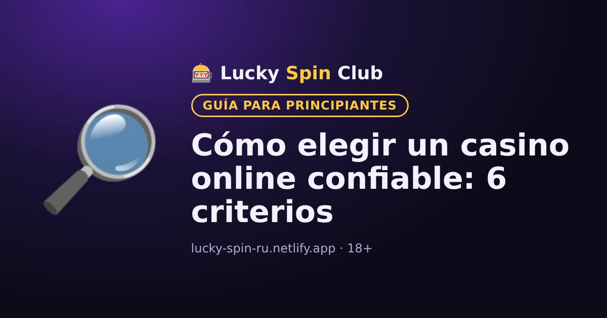

Cómo elegir un casino online confiable: 6 criterios

Actualizado: 6 de noviembre de 2026
Antes de registrarte conviene revisar algunas cosas. Te llevará cinco minutos y te ahorrará sorpresas desagradables.
1. Licencia
La información de la licencia suele estar al pie del sitio del casino. Comprueba el número de licencia en el sitio del regulador que la emitió.
2. Métodos de depósito y retiro
Asegúrate de que haya métodos de pago cómodos para ti. Revisa los importes mínimos y los plazos de retiro en la sección «Pagos» o «Preguntas frecuentes».
3. Condiciones de los bonos
Compara el requisito de apuesta, el plazo y la apuesta máxima. Un bono grande con x60 suele ser menos conveniente que uno pequeño con x20.
4. Atención al cliente
Escribe al chat de soporte antes de registrarte y haz una pregunta. Una respuesta rápida y clara es una buena señal.
5. Herramientas de juego responsable
Un casino confiable ofrece límites de depósito, recordatorios de tiempo y autoexclusión.
6. Idioma y moneda
Comprueba si el sitio está en español y si puedes abrir la cuenta en una moneda que te convenga. En nuestra comparación de casinos verás los países, monedas e idiomas de cada uno.
¿Quieres probar? El registro toma alrededor de un minuto.
🎁 Registrarse y obtener el bonoPreguntas frecuentes
¿Cómo compruebo la licencia de un casino?
Busca el número de licencia al pie del sitio del casino y verifícalo en el sitio oficial del regulador que la emitió.
¿Qué mirar en las condiciones de un bono?
El requisito de apuesta, el plazo, la apuesta máxima mientras cumples el requisito y el límite de retiro de las ganancias del bono.
¿Son legales los casinos online en mi país?
Depende del país: en algunos están permitidos, en otros solo con licencia local y en otros están prohibidos. Revisa la legislación de tu país.